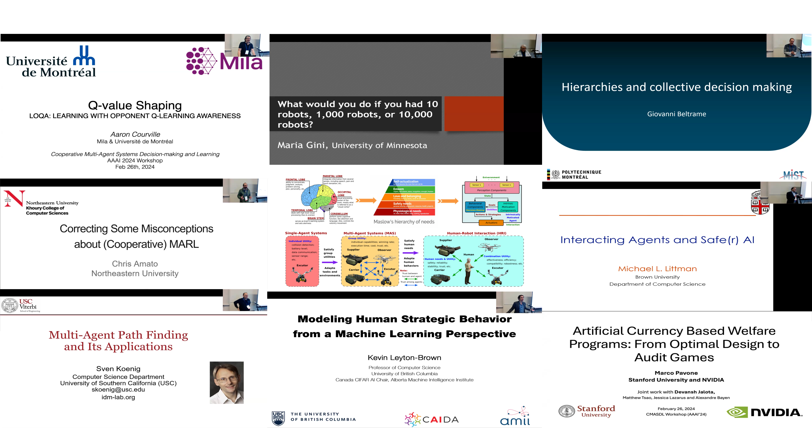
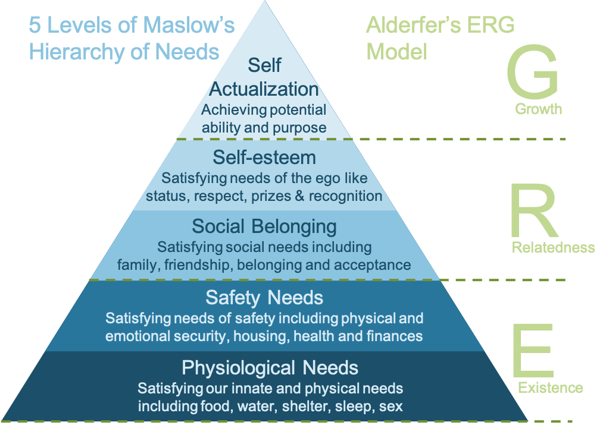

-

Invited Speakers
Intrinsically motivated AI agent modeling in MAS
About
This workshop focuses on the role of decision-making and learning in human-multi-agent cooperation, viewed through the lens of cognitive modeling. AI technologies, particularly in human-robot interaction, are increasingly focused on cognitive modeling, encompassing everything from visual processing to symbolic reasoning and action recognition. These capabilities support human-agent cooperation in complex tasks.
 Natural agents, like humans, often make decisions based on a blend of biological, social, and cognitive motivations, as elucidated by combined motivations' model like Maslow’s Hierarchy of Needs and Alderfer’s Existence-Relatedness-Growth (ERG) theory. On the other hand, the AI agent can be regarded as a self-organizing system that also presents various needs and motivations in its evolution through decision-making and learning to adapt to different scenarios and satisfy their needs. Combined with AI agent capacity to aid decision-making, it opens up new horizons in human-multi-agent collaboration. This potential is crucially essential in the context of interactions between human agents and intelligent agents, when considering to establish stable and reliable relationships in their cooperation, particularly in adversarial and rescue mission environments.
This workshop will bring together researchers from multi-agent systems (MAS) and human-robot interaction (HRI) and aims to advance the field by exploring how cognitive science, mathematical modeling, statistical analysis, software simulations, and hardware demonstrations can help answer critical questions about decision-making and learning in these cooperative environments. The goal is to understand better how cognitive modeling can enhance cooperation between humans and AI agents, especially in complex, high-stakes scenarios.
Topics
We solicit contributions from topics including but not limited to:
- Human-multi-agent cognitive modeling
- Human-multi-agent trust networks
- Trustworthy AI agents in Human-robot interaction
- Trust based Human-MAS decision-making and learning
- Consensus in Human-MAS collaboration
- Intrinsically motivated AI agent modeling in Human-MAS
- Innate-values-driven reinforcement learning
- Multi-Objective MAS decision-making and learning
- Adaptive learning with social rewards
- Cognitive models in swarm intelligence and robotics
- Game-theoretic approaches in MAS decision-making
- Cognitive model application in intelligent social systems
Sponsors
Invited Speakers

Workshop Schedule
TBD
Contributions
Oral Presentation
TBD
Posters
TBD
Organizing Committee

Qin Yang
Assistant Professor,Intelligent Social Systems and Swarm Robotics Lab (IS3R),
Bradley University
Christopher Amato
Associate Professor,Lab for Learning and Planning in Robotics,
Northeastern University
Submission
Submissions can contain relevant work in all possible stages, including those recently published work, is under submission elsewhere, was only recently finished, or is still ongoing. Authors of papers published or under submission elsewhere are encouraged to submit these papers or short versions (including abstracts) to the workshop, educating other researchers about their work, as long as resubmissions are clearly labeled to avoid copyright violations.
We welcome contributions of both short (2-4 pages) and long papers (6-8 pages) related to our stated vision in the AAAI 2025 proceedings format. Position papers and surveys are also welcome. The contributions will be non-archival but will be hosted on our workshop website. All contributions will be peer reviewed (single-blind).
Workshop paper submission deadline: 22 November 2024, 11:59 pm Pacific Time.
Notification to authors: 21 December 2024.
Contributions are to be submitted to https://easychair.org/conferences/?conf=aaai2025cmasdlworksh.
Acceptance papers will be made publicly available on the workshop website. These non-archival papers and their corresponding posters will also remain available on this website after the workshop. The authors will retain copyright of their papers.
Please contact is3rlab@gmail.com with any questions.
Past Events
The first workshop: "Cooperative Multi-Agent Systems Decision-Making and Learning: From Individual Needs to Swarm Intelligence" in AAAI 2024.
Copyright 2024 IS3R Lab | All Rights Reserved -- by is3rlab.org